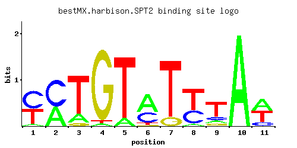

SPT2
YER161C, EXA1, SIN1
Protein involved in negative regulation of transcription; required for RNA polyadenylation; exhibits regulated interactions with both histones and SWI-SNF components, has similarity to mammalian HMG1 proteins
Best-performing DNA-binding model.

View and copy the recommended matrices ↘
A | 0.056 0.417 0.167 0.028 0.112 0.584 0.001 0.056 0.112 1.001 0.445 C | 0.526 0.581 0.001 0.001 0.001 0.332 0.001 0.360 0.139 0.001 0.138 G | 0.001 0.001 0.056 0.941 0.001 0.028 0.139 0.001 0.111 0.001 0.001 T | 0.417 0.001 0.779 0.028 0.890 0.056 0.862 0.584 0.640 0.001 0.417
A | 5 41 16 2 11 58 0 5 11 100 44 C | 52 58 0 0 0 33 0 36 13 0 13 G | 0 0 5 94 0 2 13 0 11 0 0 T | 41 0 77 2 89 5 86 58 64 0 41
A | -1.74 0.26 -0.65 -2.44 -1.05 0.60 -5.77 -1.74 -1.05 1.14 0.33 C | 1.07 1.17 -5.19 -5.19 -5.19 0.61 -5.19 0.69 -0.26 -5.19 -0.27 G | -5.19 -5.19 -1.17 1.65 -5.19 -1.86 -0.26 -5.19 -0.48 -5.19 -5.19 T | 0.26 -5.77 0.89 -2.44 1.02 -1.74 0.99 0.60 0.69 -5.77 0.26
Alternative candidate matrices 2
Historical matrix candidates from the original ScerTF database. Expand a source to inspect its original logo, scores, and matrix values.
SPT2Foat et. al.P = 7.26e-08View matrix ↘
SPT2Macisaac et. alP = 3.16e-07View matrix ↘
Gene-level annotations and interactions.
Genes bound in ChIP-chip experiments 89 genes
YAL037W, YAR009C, YAR068W, YBL005W-A, YBL005W-B, YBR159W, YBR192W, YDL228C, YDR042C, YDR075W, YDR153C, YDR210W-D, YDR226W, YDR381W, YDR386W, YDR449C, YDR450W, YDR472W, YDR524C, YDR525W, YEL033W, YEL034W, YEL035C, YEL047C, YER007C-A, YER138C, YFL030W, YGR190C, YGR192C, YHL034C, YHR135C, YHR173C, YHR174W, YHR175W, YIL134W, YIL167W, YIL168W, YIL169C, YJL013C, YJL048C, YJL137C, YJL148W, YKL038W, YKL057C, YKL118W, YKL153W, YKL181W, YKL210W, YLL004W, YLL005C, YLL014W, YLL015W, YLL026W, YLL044W, YLL046C, YLR043C, YLR057W, YLR062C, YLR063W, YLR076C, YLR077W, YLR193C, YLR301W, YLR339C, YLR341W, YLR354C, YLR367W, YLR368W, YML027W, YML057W, YML124C, YMR193C-A, YNL066W, YNL160W, YNL189W, YNL299W, YOL041C, YOL087C, YOL121C, YOL154W, YOL155C, YOR042W, YOR236W, YOR272W, YPL060W, YPL241C, YPL252C, YPR066W, YPR091C
Genes affected by TF deletion 141 genes
YHL048W, YML114C, YDR222W, YDR399W, YML113W, YOL011W, YAL003W, YFR032C, YFR033C, YHR175W, YMR189W, YPL014W, YLL034C, YLR374C, YMR103C, YOL136C, YDR339C, YER055C, YGL103W, YGR250C, YLR156W, YLR186W, YML027W, YJL017W, YMR104C, YNL116W, YOR288C, YDR279W, YER081W, YER029C, YPL111W, YCR021C, YIL118W, YLR224W, YLR226W, YNL089C, YOR263C, YOR267C, YAL044C, YAR015W, YBR195C, YKL051W, YKL119C, YLR412W, YOR073W, YOR043W, YPL055C, YIL091C, YKR080W, YLR281C, YMR017W, YML124C, YMR023C, YNL055C, YOR264W, YJL122W, YJL124C, YLR099C, YLR101C, YOR384W, YMR145C, YPR060C, YBR265W, YDR347W, YER063W, YLR192C, YIR035C, YJR150C, YLL037W, YLR375W, YMR144W, YOL085C, YPL273W, YBL028C, YBR296C, YDL201W, YER064C, YGR219W, YKL181W, YML063W, YMR321C, YNR038W, YPR167C, YGR138C, YLR416C, YDR019C, YNL033W, YOR236W, YOR268C, YLR454W, YAR018C, YGR108W, YGR139W, YLR043C, YLR077W, YNL222W, YDL048C, YGR079W, YLR354C, YGR234W, YDR174W, YLR353W, YLR387C, YNL160W, YOL155C, YOR304W, YJL196C, YNR044W, YER091C, YBR054W, YLR297W, YLR301W, YOL070C, YML015C, YLR428C, YDR055W, YIL169C, YMR001C, YMR034C, YNL045W, YKL009W, YBR244W, YFR055W, YHR135C, YHR137W, YLR049C, YMR181C, YMR250W, YOR092W, YPL040C, YLR398C, YOL098C, YGR024C, YOR372C, YOR312C, YPR009W, YPR041W, YPR073C, YGR235C, YIL041W, YNR052C
Genes supported by both experiments 13 genes
YHR135C, YHR175W, YIL169C, YKL181W, YLR043C, YLR077W, YLR301W, YLR354C, YML027W, YML124C, YNL160W, YOL155C, YOR236W